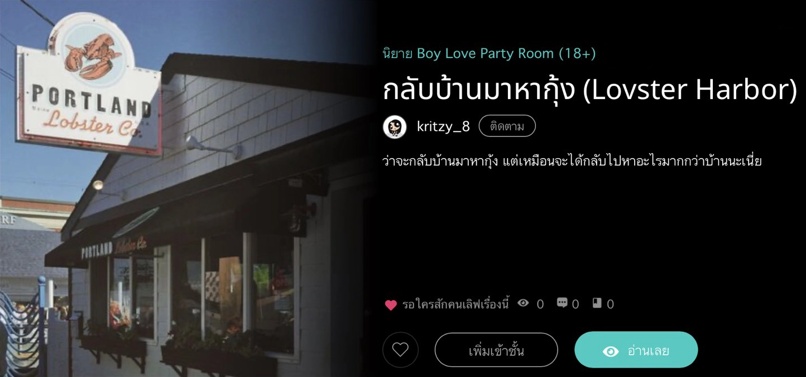

Lovster Harbor
by:
kritzy_8
ชีวิตที่ต้องคอยพยายามก้าวไปข้างหน้าให้ทันคนอื่นและโลกทั้งใบอยู่เสมอมันสุดแสนจะเหนื่อยหน่าย ในยุคที่ทุกอย่างไม่ให้โอกาสสำหรับการหยุดพักกับไม่ว่าใครหน้าไหน เพียงแค่ช้าลงก้าวเดียวมันก็เหมือนการล้มลงแล้วถูกทิ้งเอาไว้ด้านหลัง ผู้คนต่างไขว่ขว้าการงานที่มั่นคง คู่ครองที่ดี และมุ่งหาฐานะเสริมสร้างตนเอง ทั้งหมดก็เพียงเพราะคำบอกกล่าวที่เรารับฟังมันมาจากคนอื่น ๆ รอบข้าง แล้วจึงโปรแกรมสมองกับชีวิตของเราให้ทำทุกอย่างเพื่อให้ได้มันมา แต่แล้วถ้าหากเราตัดเรื่องไร้สาระพรรค์นั้นทิ้งไปล่ะ สิ่งเหล่านั้นที่เราต่างถูกบอกถูกสอนให้ฝันถึง มันสำคัญจริง ๆ เหรอ?
วิลล์เป็นหนึ่งในคนที่จมลงไปในการไล่ตามความฝันเฉกเช่นคนอีก หลายพันล้านคนบนโลก การพบเจอความผิดพลาดบางครั้งก็ไม่ได้นำมาซึ่งโซ่ตรวน ที่ผูกเขาเอาไว้กับที่ตลอดกาล แต่มันคืออิสรภาพในแบบที่เขาไม่เคยคาดฝันมาก่อน และบางทีการกลับบ้านหรือกลับไปยังที่ที่เป็นของเราจริง ๆ ก็นำมาซึ่งความสุขในแบบที่ไม่สามารถอธิบายได้ เพราะบางทีในที่ที่เราจากมา ก็ยังคงมีคนบางคนที่ยังรอคอยต้อนรับเราด้วยอ้อมแขนที่เปิดกว้างอยู่เสมอ
ขอเป็นกำลังใจให้ทุกคนในทุกช่วงวัยที่กำลังดิ้นรนต่อสู้บนโลกอันแสนโหดร้ายใบนี้นะคะ <3
kritzy_8
2 พฤศจิกายน 2025
Available to read on ReadAWrite
(กดที่รูปเพื่อดูใน ReadAWrite)

© 2025. kritzy_8, under the license to Triangle. All rights reserved.
Warning: Unauthorized copying, lending, public performance, and broadcasting are prohibited. Made in Thailand and Australia.